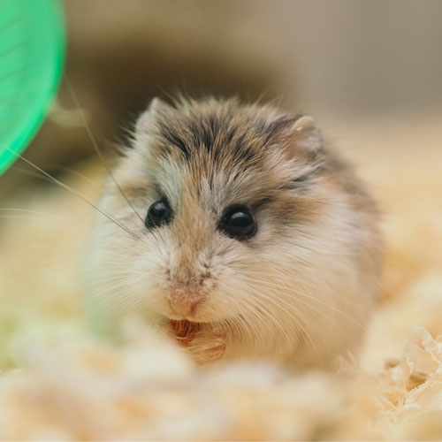

My hobbys
I love drawing, painting, art, digital painting and a lot of handcraft stuff. I like tatoos too. Now I have access to Adobe programs so I'm exploring them on my own in my free time. I'm interested in great cinematography, history and history of art too. I like doing some sports for good condition and I love rats, hamster and tiny cute animals!
Who I am?
I'm first year student on Jönköping University. I'm from Poland. Exactly from pretty city, Gdańsk. I have parents and sister, she is only one year younger. I have three cats and a dog too. I have even a boyfirend, Michael. Now, he is in Poland but last week he visited Jönköping. We have been in Stockholm too.
Why NMD?
I study NMD programme because I've dreaming all life about living abroad. I'm pretty surprised that I'm here because I wasn't interested about IT, only graphic desicng and digital painting. Now, when I'm here I noticed that I'm learning a lot of interesting things and I'm getting out from my comfort zone. I like it! My English skills are improving too, my Swedish as well because I study it everyday on my own. Read more about Jönköping!